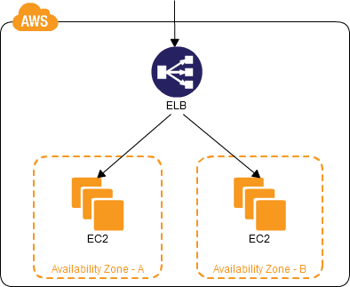

cloud design patterns
（一部の日本の男から盗まれた）
....and other stuff
Multi-server pattern
Multi-az pattern

Floating Ip pattern
Dynamic Scale-out
Scheduled Scale-out
Clone Server Pattern
Bootstrap instance
Stack Deploy/Cloud formation
Server swap*

Weighted Transition
Elastic network interface
You can look it up yourself.
http://docs.amazonwebservices.com/
AWSEC2/latest/UserGuide/using-eni.html
Job Observer Pattern

Alphabet Soup
CloudFront, CloudSearch, CloudWatch, DevPay, DynamoDB, Beanstalk, EBS, EC2, EMR, Elasticache, FPS, FWS, Glacier, Mturk, RDS, Route 53*, SES, S3, SNS, SQS, SWF, SDB, VPC, CloudFormation, Import/Export, Storage Gateway, RedShift*, EDP*
Ok, what do we use?
CloudFront, CloudSearch, CloudWatch**, DevPay, DynamoDB,
Beanstalk, EBS, EC2, EMR*, ElastiCache, FPS,
FWS, Glacier*, Mturk, RDS, Route 53,
SES, S3, SNS, SQS, SWF, SDB, VPC,
CloudFormation, Import/Export, Storage Gateway, RedShift, EDP
New Stuff
RedShift
- Oy
Data Pipeline
- Cool, not super useful
here comes
the other
Stuff
Movember
h
Elastic map reduce
Hosted Hadoop
Make some stuff up
Keep stalling!
Who's doing cool stuff?
Netflix
https://github.com/netflix
Adrian Cockcroft, god among men
http://www.slideshare.net/adrianco/high-availability-architecture-at-netflix
Yelp
https://github.com/yelp
Cool crap to check out
Oozie
- http://rvs.github.com/oozie/
EMRio
- https://github.com/Yelp/EMRio
Apache Flume
- https://github.com/apache/flume
MapR
- http://aws.amazon.com/elasticmapreduce/mapr/
COOL CRAP TO CHECK OUT v2
HParser ($$, supports FIX)
- http://www.informatica.com/us/products/b2b-data-exchange/hparser/
MapR
- http://aws.amazon.com/elasticmapreduce/mapr/
Apache Drill
- http://www.mapr.com/drill
- Hadoop, Storm/Cascading, Dremel
Elastic block store
(this seems to be a weak point on their end)
EBS Volumes
are
replicated
- But only in AZs, not regions
- This means RDS is, too
ELASTIC BLOCK STORE
RAID on EBS
- Again, EBS is replicated
- No need for 1, 5, 0+1, 10
- Except other people are doing it
- Rumored to work in Windows!
- Provisioned I/O may just work better
Oh, by the way
There's a start-up penalty for each block
in an EBS volume
But it's not that bad
...ish.
Amazon recommends that, on Windows, you do a full partition of new EBS drives.
Obviously, we're not running into this brick wall.
Edit (1/12): lulz, yes we were. We just didn't know it.
Benchmarking
- Simplify your tests, focus on one part (think unit tests)
- Keep log files of everything
- Parse and store test results (RDS)
- CloudWatch is your friend
- Be careful measuring provisioned services
- Have a target; if you don't, you'll never know when you're done
- Humans are terrible
- Don't measure ramp up/ramp down
- PRE WARM YOUR ELBs*
Random Re:Invent notes
Virtual Private Cloud
- Internal Elastic LoadBalancers!
Did you know AMIs aren't multi-region?
- I didn't
- But we only use one [for now] ...